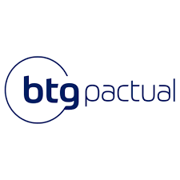

Conta Digital PJ
Conta Digital PJ segura e livre de taxas e burocracias, disponível para todos os tipos de empresas (MEI, LTDA, SA e outros).

Desenvolva sua trajetória de sucesso no mercado financeiro com o BTG
Construa sua carreira e torne-se parceiro do Maior Banco de investimentos da América Latina. Junte-se a um banco líder e alcance novas oportunidades!
Conta Digital PJ segura e livre de taxas e burocracias, disponível para todos os tipos de empresas (MEI, LTDA, SA e outros).
O cartão de crédito BTG é um cartão sem anuidade, com limite pré-aprovado e aceito em todo o Brasil. Ideal para quem busca praticidade e segurança nas compras do dia a dia.
O BTG Pactual é um banco de investimentos brasileiro, fundado em 1983, com sede em São Paulo. É conhecido por sua atuação em diversas áreas do mercado financeiro, incluindo gestão de ativos, banco de investimento e serviços bancários. O BTG Pactual se destaca por sua abordagem inovadora e pela oferta de soluções financeiras personalizadas para seus clientes.